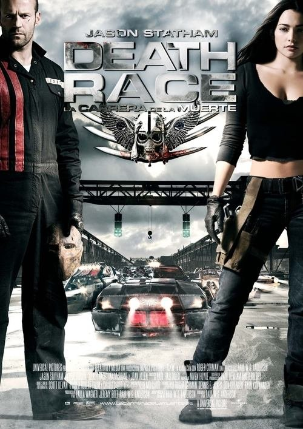

Death Race: La carrera de la muerte (2008)
Sinopsis Rápida
En un futuro distópico, la única forma de obtener la libertad es ganar una brutal carrera a muerte donde la supervivencia es cuestión de segundos y la violencia, el único lenguaje.
Sinopsis Detallada
En una prisión futurista, los condenados compiten en una carrera mortal televisada, donde la violencia extrema y la eliminación de rivales son la norma. Jason Statham interpreta a Jensen Ames, un hombre falsamente acusado que debe competir para sobrevivir y limpiar su nombre. La película ofrece una visión brutal y satírica de la sociedad, con una mezcla de acción frenética y una atmósfera oscura y opresiva. La tensión constante y la moral cuestionable convierten a 'Death Race' en una experiencia cinematográfica intensa.
¿Por qué tenés que verla?
- Acción explosiva y sin descanso que te mantendrá al borde de tu asiento.
- La actuación carismática de Jason Statham y la dirección visualmente impactante de Paul W.S. Anderson.
- Su influencia en el subgénero de las películas de acción de carreras de vehículos letales.
- Una crítica social velada sobre la naturaleza del entretenimiento y la justicia penal.
Idea Extra
Comparación de la violencia en 'Death Race' con otras películas de carreras mortales, explorando su evolución y el impacto en la cultura popular.
{{CONTENIDO_RELACIONADO}}